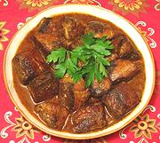

|
Tuna / Bonito Canary IslandSpain - Canary Islands - Bonito en Salmorejo | ||||
| Serves: Effort: Sched: DoAhead: |
4 w/rice *** 55 min Yes |
This dish is not for wimps - almost no chili heat but very intense flavors. In my opinion it is best with bonito, but if that fish is too intense for you, it can be made with mackerel or another fresh tuna. | |||
|
|
2 1/2 ------ 7 1 3 1 2 2 1 1 1/2 1/4 3/4 2 1/4 ------ ar |
# t --- cl t oz T T T t t t t c T c --- |
Bonito fillet (1) Salt -- Sauce Garlic Cumin seed Roasted Pepper (2) Thyme, fresh (3) Oregano, fresh Parsley, flat Paprika, sweet (4) Paprika, smoked (5) Salt Pepper Wine, white Sherry Vinegar (6) Olive Oil, ExtV -------- Oil (7) |
Prep - (30 min (exclusive of cleaning fish)
|